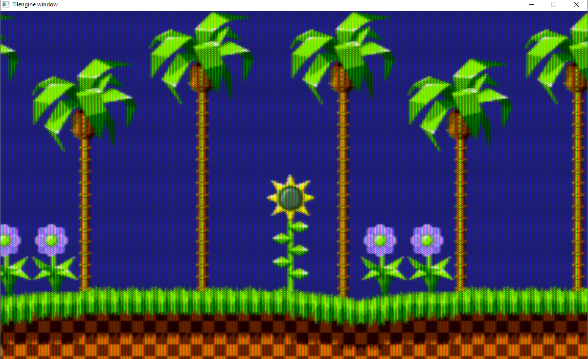
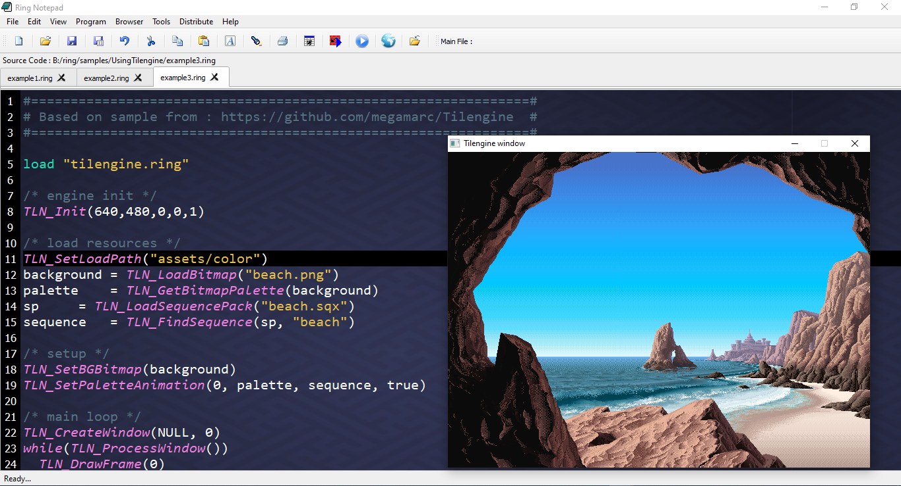
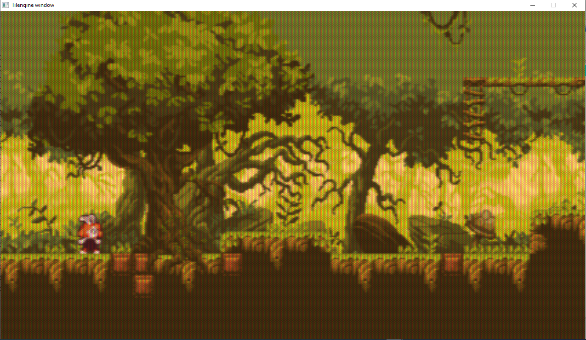
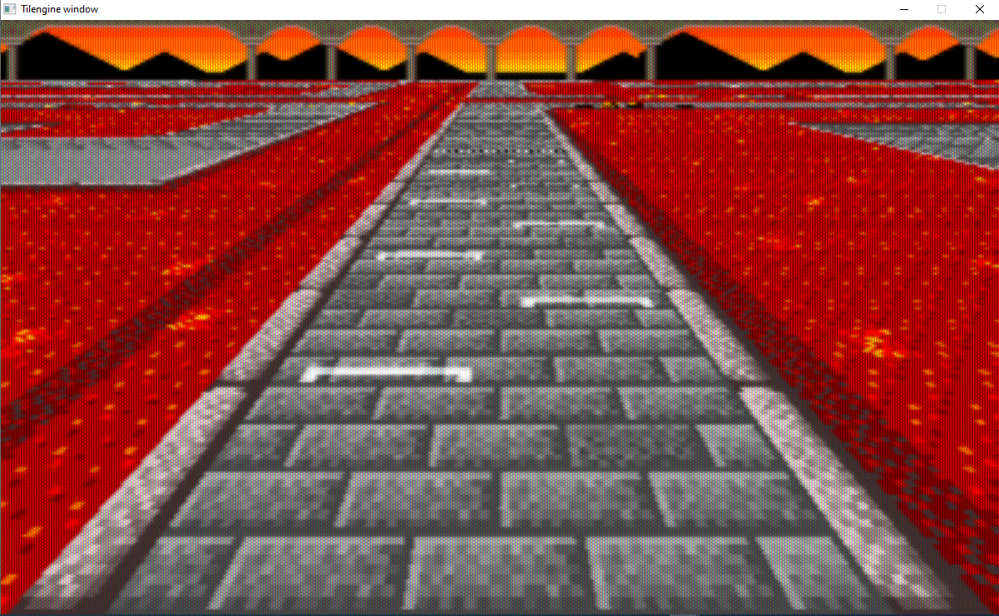
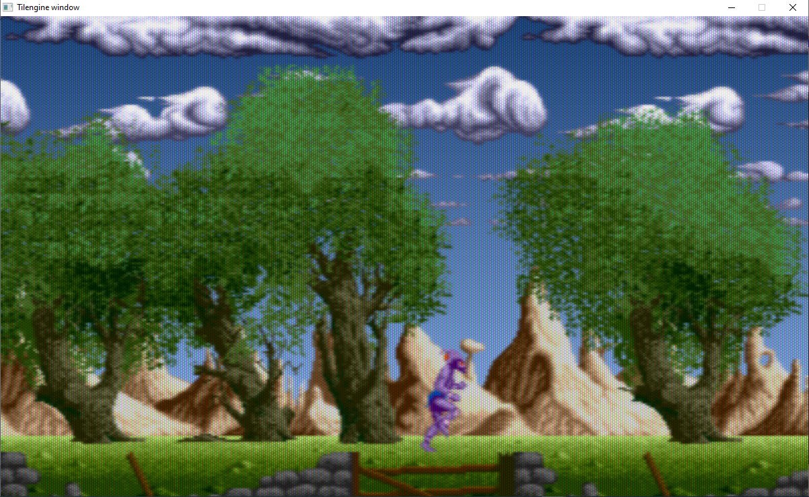
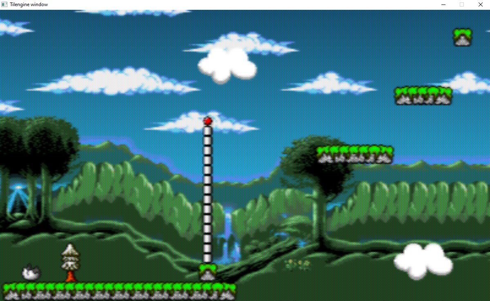
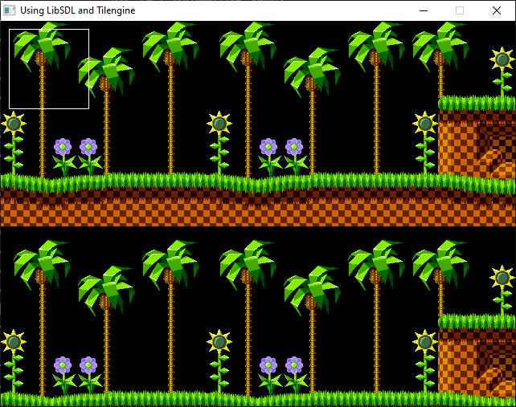
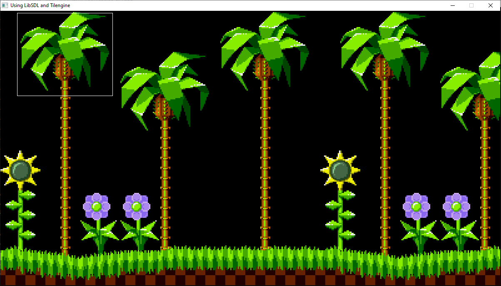

RingTilengine Extension¶
In this chapter we will learn about using the RingTilengine extension.
This extension provides complete support for Tilengine
The 2D retro graphics engine with raster effects
Tilengine URL: https://github.com/megamarc/Tilengine
Useful links (Original documentation for C programmers)
Getting started: https://github.com/ring-lang/Tilengine/blob/master/docs/quick_guide.md
Initialization: https://github.com/ring-lang/Tilengine/blob/master/docs/starting.md
Using the window: https://github.com/ring-lang/Tilengine/blob/master/docs/windowing.md
External rendering: https://github.com/ring-lang/Tilengine/blob/master/docs/rendering.md
Background layers: https://github.com/ring-lang/Tilengine/blob/master/docs/layers.md
Sprites: https://github.com/ring-lang/Tilengine/blob/master/docs/sprites.md
Useful tools
Tiled Map Editor: https://www.mapeditor.org/
aseprite: https://www.aseprite.org/
Piskel: https://www.piskelapp.com/
GrafX2: http://grafx2.chez.com/
Support
Tilengine Forum: http://www.tilengine.org/forum/
Getting Started¶
Example (1):
load "tilengine.ring"
TLN_Init(400, 240, 1, 0, 0)
TLN_SetLoadPath("assets\sonic")
foreground = TLN_LoadTilemap ("Sonic_md_fg1.tmx", NULL)
TLN_SetLayerTilemap(0, foreground)
TLN_CreateWindow(NULL, 0)
while TLN_ProcessWindow()
TLN_DrawFrame(0)
end
TLN_DeleteTilemap(foreground)
TLN_Deinit()
Screen Shot:

More Samples¶
Example (2):
load "tilengine.ring"
WIDTH = 400
HEIGHT = 240
frame = 0
/* setup engine */
TLN_Init(WIDTH, HEIGHT, 1,0,0)
/* load layer */
tilemap = TLN_LoadTilemap("assets/sonic/Sonic_md_fg1.tmx", NULL)
/* setup the layer */
TLN_SetLayer(0, NULL, tilemap)
TLN_SetBGColor(32,32,128)
/* main loop */
TLN_CreateWindow(NULL, 0)
while TLN_ProcessWindow ()
/* scroll the layer, one pixel per frame */
TLN_SetLayerPosition (0, frame, 0)
/* render to the window */
TLN_DrawFrame (0)
frame++
end
/* release resources */
TLN_DeleteTilemap(tilemap)
TLN_Deinit()
Screen Shot:
Example (3):
load "tilengine.ring"
/* engine init */
TLN_Init(640,480,0,0,1)
/* load resources */
TLN_SetLoadPath("assets/color")
background = TLN_LoadBitmap("beach.png")
palette = TLN_GetBitmapPalette(background)
sp = TLN_LoadSequencePack("beach.sqx")
sequence = TLN_FindSequence(sp, "beach")
/* setup */
TLN_SetBGBitmap(background)
TLN_SetPaletteAnimation(0, palette, sequence, true)
/* main loop */
TLN_CreateWindow(NULL, 0)
TLN_DisableCRTEffect()
while(TLN_ProcessWindow())
TLN_DrawFrame(0)
end
TLN_DeleteBitmap(background)
TLN_DeleteSequencePack(sp)
TLN_Deinit()
Screen Shot:
Example (4):
load "tilengine.ring"
WIDTH = 400
HEIGHT= 240
LAYER_FOREGROUND = 0
LAYER_BACKGROUND = 1
MAX_LAYER = 2
player_x = -16
player_y = 160
/* basic setup */
TLN_Init(WIDTH, HEIGHT, MAX_LAYER,1,0)
TLN_SetBGColor(0, 96, 184)
/* load resources */
TLN_SetLoadPath("assets/smw")
foreground = TLN_LoadTilemap("smw_foreground.tmx", NULL)
background = TLN_LoadTilemap("smw_background.tmx", NULL)
TLN_SetLayerTilemap(LAYER_FOREGROUND, foreground)
TLN_SetLayerTilemap(LAYER_BACKGROUND, background)
TLN_SetLayerPosition(LAYER_FOREGROUND, 0,48)
TLN_SetLayerPosition(LAYER_BACKGROUND, 0,80)
/* setup sprite */
spriteset = TLN_LoadSpriteset("smw_sprite")
TLN_SetSpriteSet(0, spriteset)
TLN_SetSpritePicture(0, 0)
TLN_SetSpritePosition(0, player_x, player_y)
/* setup animations */
seq_walking = TLN_CreateSpriteSequence(NULL, spriteset, "walking", 6)
TLN_SetSpriteAnimation(0, seq_walking, 0)
/* main loop */
TLN_CreateWindow(NULL, 0)
while TLN_ProcessWindow()
player_x += 1
if player_x >= WIDTH
player_x = -16
ok
TLN_SetSpritePosition(0, player_x, player_y)
TLN_DrawFrame(0)
end
/* deinit */
TLN_DeleteTilemap(foreground)
TLN_DeleteTilemap(background)
TLN_Deinit()
Screen Shot:

Example (5):
load "tilengine.ring"
HRES = 424
VRES = 240
LAYER_PROPS_FRONT = 0
LAYER_FOREGROUND = 1
LAYER_PROPS = 2
LAYER_MIDDLEGROUND = 3
LAYER_BACKGROUND = 4
NUM_LAYERS = 5
xworld = 0
oldx = -1
TLN_Init(HRES, VRES, NUM_LAYERS, 8, 0)
/* load assets */
TLN_SetLogLevel(TLN_LOG_ERRORS)
TLN_SetLoadPath("assets/forest")
foreground = TLN_LoadTilemap("map.tmx", "Main Layer")
middleground = TLN_LoadBitmap("middleground.png")
background = TLN_LoadBitmap("background.png")
atlas = TLN_LoadSpriteset("atlas.png")
props_list = TLN_LoadObjectList("map.tmx", NULL)
/* setup layers */
TLN_SetLayer(LAYER_FOREGROUND, NULL, foreground)
TLN_SetLayerBitmap(LAYER_MIDDLEGROUND, middleground)
TLN_SetLayerBitmap(LAYER_BACKGROUND, background)
width = TLN_GetLayerWidth(LAYER_FOREGROUND)
height = TLN_GetLayerHeight(LAYER_FOREGROUND)
/* objects layer: add back objects (behind sprites) */
TLN_SetLayerObjects(LAYER_PROPS, props_list, NULL)
/* sync props layer positions to main layer */
TLN_SetLayerParent(LAYER_PROPS_FRONT, LAYER_FOREGROUND)
TLN_SetLayerParent(LAYER_PROPS, LAYER_FOREGROUND)
/* create sprite sequences */
idle = TLN_CreateSpriteSequence(NULL, atlas, "player-idle/player-idle-", 6)
skip = TLN_CreateSpriteSequence(NULL, atlas, "player-skip/player-skip-", 6)
/* setup main player sprite */
xplayer = 48
yplayer = 144
TLN_ConfigSprite(0, atlas, 0)
TLN_SetSpriteAnimation(0, idle, 0)
/* create window & main loop */
TLN_CreateWindow(NULL, 0)
TLN_DisableCRTEffect()
while TLN_ProcessWindow()
TLN_DrawFrame(0)
/* move 3 pixels right/left main layer */
if (TLN_GetInput(INPUT_LEFT) && xworld > 0)
xworld -= 3
elseif (TLN_GetInput(INPUT_RIGHT) && xworld < width - HRES)
xworld += 3
ok
/* update on change */
if xworld != oldx
TLN_SetLayerPosition(LAYER_FOREGROUND, xworld, 32)
TLN_SetLayerPosition(LAYER_MIDDLEGROUND, xworld / 2, 0)
TLN_SetLayerPosition(LAYER_BACKGROUND, xworld / 3, 0)
TLN_SetSpritePosition(0, xplayer - xworld, yplayer)
oldx = xworld
ok
end
/* release resources */
TLN_DeleteTilemap(foreground)
TLN_DeleteBitmap(middleground)
TLN_CloseResourcePack()
TLN_DeleteSpriteset(atlas)
TLN_DeleteObjectList(props_list)
TLN_DeleteWindow()
TLN_Deinit()
Screen Shot:
Example (6):
load "tilengine.ring"
load "sin.ring"
WIDTH = 400
HEIGHT = 240
FIXED_BITS = 16
LAYER_FOREGROUND = 0
LAYER_BACKGROUND = 1
MAX_LAYER = 2
MAP_HORIZON = 0
MAP_TRACK = 1
MAX_MAP = 2
road = NULL
x = NULL
y = NULL
angle = NULL
func main
/* setup engine */
TLN_Init (WIDTH,HEIGHT, MAX_LAYER, 0, 0)
TLN_SetRasterCallback ("raster_callback()")
TLN_SetBGColor (0,0,0)
/* load resources*/
TLN_SetLoadPath ("assets/smk")
road = TLN_LoadTilemap ("track1.tmx", NULL)
horizon = TLN_LoadTilemap ("track1_bg.tmx", NULL)
/* startup display */
TLN_CreateWindow (NULL, 0)
x = int2fix(-136)
y = int2fix(336)
s = 0
a = float2fix(0.2)
angle = 0
BuildSinTable ()
/* main loop */
while (TLN_ProcessWindow ())
TLN_SetLayerTilemap (LAYER_FOREGROUND, horizon)
TLN_SetLayerTilemap (LAYER_BACKGROUND, horizon)
TLN_SetLayerPosition (LAYER_FOREGROUND, lerp(angle*2, 0,360, 0,256), 24)
TLN_SetLayerPosition (LAYER_BACKGROUND, lerp(angle, 0,360, 0,256), 0)
TLN_ResetLayerMode (LAYER_BACKGROUND)
/* input */
if (TLN_GetInput (INPUT_LEFT))
angle-=2
elseif (TLN_GetInput (INPUT_RIGHT))
angle+=2
ok
if (TLN_GetInput (INPUT_UP))
s += a
if (s > int2fix(2))
s = int2fix(2)
ok
elseif (s >= a)
s -= a
ok
if (TLN_GetInput (INPUT_DOWN))
s -= a
if (s < -int2fix(2))
s = -int2fix(2)
ok
elseif (s <= -a)
s += a
ok
if (s != 0)
angle = angle%360
if (angle < 0)
angle += 360
ok
x += CalcSin (angle, s)
y -= CalcCos (angle, s)
ok
/* render to window */
TLN_DrawFrame (0)
end
/* deinit */
TLN_DeleteTilemap (road)
TLN_DeleteTilemap (horizon)
TLN_DeleteWindow ()
TLN_Deinit ()
/* raster callback (virtual HBLANK) */
func raster_callback
line = TLN_GETSCANLINE()
if (line = 24)
TLN_SetLayerTilemap (LAYER_BACKGROUND, road)
TLN_SetLayerPosition (LAYER_BACKGROUND, fix2int(x), fix2int(y))
TLN_DisableLayer (LAYER_FOREGROUND)
elseif (line >= 24)
s0 = float2fix (0.2)
s1 = float2fix (5.0)
s = lerp (line, 24,HEIGHT, s0,s1)
scale = fix2float (s)
TLN_SetLayerTransform (LAYER_BACKGROUND, angle, WIDTH/2, HEIGHT, scale, scale)
ok
func lerp x,x0,x1,fx0,fx1
return (fx0) + ((fx1) - (fx0)) * ((x) - (x0))/((x1) - (x0))
func float2fix f return f * (1 << FIXED_BITS)
func int2fix i return i << FIXED_BITS
func fix2int f return f >> FIXED_BITS
func fix2float f return f/(1 << FIXED_BITS)
Screen Shot:
Example (7):
load "tilengine.ring"
load "sin.ring"
WIDTH = 320
HEIGHT = 192
COLUMNS = WIDTH/8 + 2
/* layers */
LAYER_FOREGROUND = 0
LAYER_BACKGROUND = 1
MAX_LAYER = 2
frame = 0
column = list(COLUMNS)
/* entry point */
func main
/* setup engine */
TLN_Init (WIDTH,HEIGHT, MAX_LAYER, 0, 5)
TLN_SetRasterCallback ("raster_callback()")
TLN_SetBGColor (0,0,0)
/* load resources*/
TLN_SetLoadPath ("assets/tf3")
foreground = TLN_LoadTilemap ("tf3_bg2.tmx", NULL)
background = TLN_LoadTilemap ("tf3_bg3.tmx", NULL)
TLN_SetLayerTilemap (LAYER_FOREGROUND, foreground)
TLN_SetLayerTilemap (LAYER_BACKGROUND, background)
BuildSinTable ()
# Convert the Column List to Array of Integers
intArray = "" for item in column intArray += int2Bytes(item) next
TLN_SetLayerColumnOffset (LAYER_BACKGROUND, :intArray)
/* main loop */
TLN_CreateWindow (NULL, 0)
while (TLN_ProcessWindow ())
/* scroll */
TLN_SetLayerPosition (LAYER_FOREGROUND, frame*3, 0)
TLN_SetLayerPosition (LAYER_BACKGROUND, frame, 0)
/* update column offset table */
for c=1 to COLUMNS
column[c] = CalcSin (frame*5 + c*20, 3)
next
/* render to window */
TLN_DrawFrame (frame)
frame++
end
/* deinit */
TLN_DeleteTilemap (foreground)
TLN_DeleteTilemap (background)
TLN_Deinit ()
func raster_callback
/* raster callback (virtual HBLANK) */
line = TLN_GetScanLine()
TLN_SetLayerPosition (LAYER_FOREGROUND, frame*2, CalcSin((frame+line)<<1, 8) + 8)
TLN_SetLayerPosition (LAYER_BACKGROUND, frame + CalcSin((frame + line)<<1, 10), 0)
func lerp x,x0,x1,fx0,fx1
/* linear interpolation */
return (fx0) + ((fx1) - (fx0))*((x) - (x0))/((x1) - (x0))
Screen Shot:

Example (8):
load "tilengine.ring"
WIDTH = 400
HEIGHT = 240
sky = [
[0x1D, 0x44, 0x7B],
[0x7F, 0xA4, 0xD9],
[0x0B, 0x00, 0x4E],
[0xEB, 0x99, 0x9D]
]
sky_hi_r = 0
sky_hi_g = 0
sky_hi_b = 0
sky_lo_r = 0
sky_lo_g = 0
sky_lo_b = 0
frame = 0
xpos = 0
speed = 2
max_xpos = 4720
/* layers */
LAYER_FOREGROUND = 0
LAYER_BACKGROUND = 1
MAX_LAYER = 2
/* entry point */
func main
/* setup engine */
TLN_Init (WIDTH, HEIGHT, 2,1,0)
TLN_SetBGColor (0,128,238)
TLN_SetRasterCallback ("raster_callback()")
/* load resources */
TLN_SetLoadPath ("assets/sotb")
foreground = TLN_LoadTilemap ("SOTB_fg.tmx", NULL)
background = TLN_LoadTilemap ("SOTB_bg.tmx", NULL)
TLN_SetLayerTilemap (LAYER_FOREGROUND, foreground)
TLN_SetLayerTilemap (LAYER_BACKGROUND, background)
spriteset = TLN_LoadSpriteset ("SOTB")
walk = TLN_CreateSpriteSequence (NULL, spriteset, "walk", 6)
TLN_SetSpriteSet (0, spriteset)
TLN_SetSpritePosition (0, 200,160)
TLN_SetSpriteAnimation (0, walk, 0)
xpos = 2000
sky_hi_r = sky[1][1]
sky_hi_g = sky[1][2]
sky_hi_b = sky[1][3]
sky_lo_r = sky[2][1]
sky_lo_g = sky[2][2]
sky_lo_b = sky[2][3]
/* main loop */
TLN_CreateWindow (NULL, 0)
TLN_DisableCRTEffect()
while (TLN_ProcessWindow ())
{
if (xpos < max_xpos)
{
xpos += speed
if (xpos >= max_xpos)
{
TLN_DisableSpriteAnimation (0)
TLN_SetSpritePicture (0, 0)
}
}
/* sky gradient */
if (frame>=300 && frame<=900)
{
/* interpolate upper color */
sky_hi_r = lerp (frame, 300,900, sky[1][1], sky[3][1])
sky_hi_g = lerp (frame, 300,900, sky[1][2], sky[3][2])
sky_hi_b = lerp (frame, 300,900, sky[1][3], sky[3][3])
/* interpolate lower color */
sky_lo_r = lerp (frame, 300,900, sky[2][1], sky[4][1])
sky_lo_g = lerp (frame, 300,900, sky[2][2], sky[4][2])
sky_lo_b = lerp (frame, 300,900, sky[2][3], sky[4][3])
}
TLN_SetLayerPosition (LAYER_FOREGROUND, xpos, 0)
/* render to the window */
TLN_DrawFrame (frame)
frame++
}
/* release resources */
TLN_DeleteSequence(walk)
TLN_DeleteTilemap (foreground)
TLN_DeleteTilemap (background)
TLN_Deinit ()
func raster_callback
line = TLN_GetScanLine()
pos = 0
/* sky color */
if (line < 192)
{
//color = new RGB
/* interpolate between upper and lower color */
r = lerp (line, 0,191, sky_hi_r, sky_lo_r)
g = lerp (line, 0,191, sky_hi_g, sky_lo_g)
b = lerp (line, 0,191, sky_hi_b, sky_lo_b)
TLN_SetBGColor (r, g ,b)
}
/* background layer */
pos = -1
if (line = 0 || line = 24 || line = 64 || line = 88 || line = 96)
pos = lerp (line, 0,96, xpos*0.7 , xpos*0.2 )
elseif (line = 120)
pos = xpos/2
elseif (line = 208 || line = 216 || line = 224 || line = 232)
pos = lerp (line,208,232,xpos*1,xpos*2)
ok
if (pos != -1)
TLN_SetLayerPosition (LAYER_BACKGROUND, pos, 0)
ok
/* foreground layer */
pos = -1
if (line = 0)
pos = xpos
elseif (line = 216)
pos = xpos*3
ok
if (pos != -1)
TLN_SetLayerPosition (LAYER_FOREGROUND, pos, 0)
ok
func lerp x,x0,x1,fx0,fx1
/* linear interpolation */
return (fx0 + (fx1-fx0)*(x-x0)/(x1-x0))
Screen Shot:
Example (9):
load "tilengine.ring"
WIDTH = 400
HEIGHT = 240
MIN_SCALE = 50
MAX_SCALE = 200
/* RGB sky colors */
sky = [
[0x19, 0x54, 0x75],
[0x2C, 0xB0, 0xDC]
]
/* layers */
LAYER_FOREGROUND = 0
LAYER_BACKGROUND = 1
MAX_LAYER = 2
xpos=0 ypos=0 scale=0
/* entry point */
func main
/* setup engine */
TLN_Init (WIDTH, HEIGHT, MAX_LAYER,0,0)
TLN_SetBGColor (34,136,170)
TLN_SetRasterCallback ("raster_callback()")
/* load resources */
TLN_SetLoadPath ("assets/fox")
foreground = TLN_LoadTilemap ("psycho.tmx", NULL)
background = TLN_LoadTilemap ("rolo.tmx", NULL)
TLN_SetLayerTilemap (LAYER_FOREGROUND, foreground)
TLN_SetLayerTilemap (LAYER_BACKGROUND, background)
/* initial values */
xpos = 0
ypos = 192
scale = 100
/* main loop */
TLN_CreateWindow (NULL, 0)
TLN_DisableCRTEffect()
while TLN_ProcessWindow ()
/* user input */
if TLN_GetInput (INPUT_LEFT)
xpos-- ok
if TLN_GetInput (INPUT_RIGHT)
xpos++ ok
if TLN_GetInput (INPUT_UP) && ypos > 0
ypos-- ok
if TLN_GetInput (INPUT_DOWN)
ypos++ ok
if TLN_GetInput (INPUT_A) && scale < MAX_SCALE
scale += 1 ok
if TLN_GetInput (INPUT_B) && scale > MIN_SCALE
scale -= 1 ok
/* calculate scale factor from fixed point base */
fgscale = scale/100.0f
bgscale = lerp(scale, MIN_SCALE,MAX_SCALE, 0.75,1.5)
/* scale dependant lower clipping */
maxy = 640 - (240*100/scale)
if ypos > maxy
ypos = maxy
ok
/* update position */
bgypos = lerp(scale,MIN_SCALE,MAX_SCALE, 0,80)
TLN_SetLayerPosition (LAYER_FOREGROUND, xpos*2, ypos)
TLN_SetLayerPosition (LAYER_BACKGROUND, xpos, bgypos)
TLN_SetLayerScaling (LAYER_FOREGROUND, fgscale, fgscale)
TLN_SetLayerScaling (LAYER_BACKGROUND, bgscale, bgscale)
/* render to the window */
TLN_DrawFrame (0)
end
/* release resources */
TLN_DeleteTilemap (foreground)
TLN_DeleteTilemap (background)
TLN_Deinit ()
/* sky color gradient with raster effect */
func raster_callback
line = TLN_GetScanLine()
if line <= 152
r = lerp (line, 0,152, sky[1][1], sky[2][1])
g = lerp (line, 0,152, sky[1][2], sky[2][2])
b = lerp (line, 0,152, sky[1][3], sky[2][3])
TLN_SetBGColor (r, g, b)
ok
/* linear interpolation */
func lerp x,x0,x1,fx0,fx1
return (fx0) + ((fx1) - (fx0))*((x) - (x0))/((x1) - (x0))
Screen Shot:
Example (10):
load "tilengine.ring"
WIDTH = 400
HEIGHT = 240
sky = [
[0x1B, 0x00, 0x8B],
[0x00, 0x74, 0xD7],
[0x24, 0x92, 0xDB],
[0x1F, 0x7F, 0xBE]
]
/* layers */
LAYER_FOREGROUND = 0
LAYER_BACKGROUND = 1
MAX_LAYER = 2
pos_foreground = 0
pos_background = list(6)
inc_background = list(6)
speed = 0
ypos = 0
color = list(3)
/* entry point */
func main
/* setup engine */
TLN_Init (WIDTH,HEIGHT, MAX_LAYER, 0, 1)
TLN_SetRasterCallback ("raster_callback()")
TLN_SetBGColor (0,128,238)
/* load resources*/
TLN_SetLoadPath ("assets/sonic")
foreground = TLN_LoadTilemap ("Sonic_md_fg1.tmx", NULL)
background = TLN_LoadTilemap ("Sonic_md_bg1.tmx", NULL)
TLN_SetLayerTilemap (LAYER_FOREGROUND, foreground)
TLN_SetLayerTilemap (LAYER_BACKGROUND, background)
sp = TLN_LoadSequencePack ("Sonic_md_seq.sqx")
sequence = TLN_FindSequence (sp, "seq_water")
/* assign color sequence to various entries in palette */
palette = TLN_GetLayerPalette (LAYER_BACKGROUND)
TLN_SetPaletteAnimation (TLN_GetAvailableAnimation(), palette, sequence, true)
/* compute increments for variable background scrolling speeds */
inc_background[1] = 0.562f
inc_background[2] = 0.437f
inc_background[3] = 0.375f
inc_background[4] = 0.625f
inc_background[5] = 1.0f
inc_background[6] = 2.0f
/* startup display */
TLN_CreateWindow (NULL, 0)
/* main loop */
while TLN_ProcessWindow ()
if TLN_GetInput (INPUT_RIGHT)
speed += 0.02
if speed > 1.0
speed = 1.0f
ok
elseif speed > 0.0
speed -= 0.02
if speed < 0.0
speed = 0.0f
ok
ok
if TLN_GetInput (INPUT_LEFT)
speed -= 0.02
if speed < -1
speed = -1
ok
elseif speed < 0
speed += 0.02
if speed > 0
speed = 0
ok
ok
/* scroll */
pos_foreground += 3*speed
TLN_SetLayerPosition (LAYER_FOREGROUND, pos_foreground, ypos)
for c=1 to 6
pos_background[c] += (inc_background[c] * speed)
next
/* render to window */
TLN_DrawFrame (0)
end
/* deinit */
TLN_DeleteTilemap (foreground)
TLN_DeleteTilemap (background)
TLN_DeleteSequencePack (sp)
TLN_Deinit ()
/* raster callback (virtual HBLANK) */
func raster_callback
line = TLN_GetScanLine()
pos =- 1
if line=0
pos = pos_background[1]
elseif line=32
pos = pos_background[2]
elseif line=48
pos = pos_background[3]
elseif line=64
pos = pos_background[4]
elseif line=112
pos = pos_background[5]
elseif line >= 152
pos = lerp (line, 152,224, pos_background[5], pos_background[6])
ok
if pos != -1
TLN_SetLayerPosition (LAYER_BACKGROUND, pos, 0)
ok
/* background color gradients */
if line < 112
InterpolateColor (line, 0,112, sky[1], sky[2], color)
TLN_SetBGColor (color[1], color[2], color[3])
elseif line >= 144
InterpolateColor (line, 144,HEIGHT, sky[3], sky[4], color)
TLN_SetBGColor (color[1], color[2], color[3])
ok
func InterpolateColor v,v1,v2,color1,color2,result
result[1] = lerp (v, v1,v2, color1[1], color2[1])
result[2] = lerp (v, v1,v2, color1[2], color2[2])
result[3] = lerp (v, v1,v2, color1[3], color2[3])
/* linear interpolation */
func lerp x,x0,x1,fx0,fx1
return (fx0) + ((fx1) - (fx0))*((x) - (x0))/((x1) - (x0))
Screen Shot:

Using LibSDL and Tilengine¶
Example (11):
load "tilengine.ring"
load "libsdl.ring"
width = 640
height = 480
func main
# Start Tilengine
TLN_Init(width, height, 2, 80, 0)
# Start LibSDL
SDL_Init(SDL_INIT_EVERYTHING)
win = SDL_CreateWindow("Using LibSDL and Tilengine", 100, 100, width, height, SDL_WINDOW_SHOWN|SDL_WINDOW_OPENGL)
ren = SDL_CreateRenderer(win, -1, SDL_RENDERER_ACCELERATED | SDL_RENDERER_PRESENTVSYNC )
# Create the Surface in LibSDL that will be used by Tilengine for Drawing
surface = SDL_CreateRGBSurface(0, width, height, 32, 0,0,0,0)
# Get the Surface Pixels pointer from the Surface Structure
pixels = SDL_Get_SDL_Surface_Pixels(surface)
# Pass the Pixels pointer to Tilengine
TLN_SetRenderTarget(pixels, width * 4)
# Using Tilengine
TLN_SetLoadPath("assets\sonic")
foreground = TLN_LoadTilemap ("Sonic_md_fg1.tmx", NULL)
TLN_SetLayerTilemap(0, foreground)
# Using LibSDL Events Loop
oEvent = SDL_New_SDL_Event()
while true
# Using Tilengine to Update the Frame
TLN_UpdateFrame(0)
# Draw Tilengine results using LibSDL
# ( Surface --> Texture --> Render)
tex = SDL_CreateTextureFromSurface(ren, surface);
SDL_RenderCopy2(ren,tex)
SDL_DestroyTexture(tex)
# Draw Rectangle using LibSDL
rect = SDL_New_SDL_Rect()
SDL_Set_SDL_Rect_x(rect,10)
SDL_Set_SDL_Rect_y(rect,10)
SDL_Set_SDL_Rect_w(rect,100)
SDL_Set_SDL_Rect_h(rect,100)
SDL_SetRenderDrawColor(ren,255,255,255,255)
SDL_RenderDrawRect(ren,rect)
SDL_Destroy_SDL_Rect(rect)
# Display Results using LibSDL
SDL_RenderPresent(ren)
# Check Events
SDL_PollEvent(oEvent)
switch SDL_Get_SDL_Event_Type(oEvent)
on SDL_Get_SDL_Quit()
exit
on SDL_Get_SDL_Keydown()
Key = SDL_Get_SDL_Event_key_Keysym_Sym(oEvent)
if key = 27 exit ok
off
end
# End of Tilengine Usage
TLN_Deinit()
# End of LibSDL Usage
SDL_DestroyWindow(win)
SDL_Quit()
Screen Shot:
Example (12):
load "tilengine.ring"
load "libsdl.ring"
factor = 3
width = 400*factor
height = 220*factor
func main
# Start Tilengine
TLN_Init(width, height, 2, 80, 0)
# Start LibSDL
SDL_Init(SDL_INIT_EVERYTHING)
win = SDL_CreateWindow("Using LibSDL and Tilengine", 40, 40, width, height, SDL_WINDOW_SHOWN|SDL_WINDOW_OPENGL)
ren = SDL_CreateRenderer(win, -1, SDL_RENDERER_ACCELERATED | SDL_RENDERER_PRESENTVSYNC )
# Create the Surface in LibSDL that will be used by Tilengine for Drawing
surface = SDL_CreateRGBSurface(0, width, height, 32, 0,0,0,0)
# Get the Surface Pixels pointer from the Surface Structure
pixels = SDL_Get_SDL_Surface_Pixels(surface)
# Pass the Pixels pointer to Tilengine
TLN_SetRenderTarget(pixels, width * 4)
# Using Tilengine
TLN_SetLoadPath("assets\sonic")
foreground = TLN_LoadTilemap ("Sonic_md_fg1.tmx", NULL)
TLN_SetLayerTilemap(0, foreground)
# Using LibSDL Events Loop
oEvent = SDL_New_SDL_Event()
while true
# Using Tilengine to Update the Frame
TLN_UpdateFrame(0)
# Draw Tilengine results using LibSDL
# ( Surface --> Texture --> Render)
tex = SDL_CreateTextureFromSurface(ren, surface);
rectSource = SDL_New_SDL_Rect()
SDL_Set_SDL_Rect_x(rectSource,0)
SDL_Set_SDL_Rect_y(rectSource,0)
SDL_Set_SDL_Rect_w(rectSource,400)
SDL_Set_SDL_Rect_h(rectSource,220)
rectDest = SDL_New_SDL_Rect()
SDL_Set_SDL_Rect_x(rectDest,0)
SDL_Set_SDL_Rect_y(rectDest,0)
SDL_Set_SDL_Rect_w(rectDest,width)
SDL_Set_SDL_Rect_h(rectDest,height)
SDL_RenderCopy(ren,tex,rectSource,rectDest)
SDL_Destroy_SDL_Rect(rectSource)
SDL_Destroy_SDL_Rect(rectDest)
SDL_DestroyTexture(tex)
# Draw Rectangle using LibSDL
rect = SDL_New_SDL_Rect()
SDL_Set_SDL_Rect_x(rect,40)
SDL_Set_SDL_Rect_y(rect,5)
SDL_Set_SDL_Rect_w(rect,230)
SDL_Set_SDL_Rect_h(rect,200)
SDL_SetRenderDrawColor(ren,255,255,255,255)
SDL_RenderDrawRect(ren,rect)
SDL_Destroy_SDL_Rect(rect)
# Display Results using LibSDL
SDL_RenderPresent(ren)
# Check Events
SDL_PollEvent(oEvent)
switch SDL_Get_SDL_Event_Type(oEvent)
on SDL_Get_SDL_Quit()
exit
on SDL_Get_SDL_Keydown()
Key = SDL_Get_SDL_Event_key_Keysym_Sym(oEvent)
if key = 27 exit ok
off
end
# End of Tilengine Usage
TLN_Deinit()
# End of LibSDL Usage
SDL_DestroyWindow(win)
SDL_Quit()
Screen Shot:
Reference¶
Constants:
TILENGINE_VER_MAJ
TILENGINE_VER_MIN
TILENGINE_VER_REV
TILENGINE_HEADER_VERSION
FLAG_NONE
FLAG_FLIPX
FLAG_FLIPY
FLAG_ROTATE
FLAG_PRIORITY
FLAG_MASKED
BLEND_NONE
BLEND_MIX25
BLEND_MIX50
BLEND_MIX75
BLEND_ADD
BLEND_SUB
BLEND_MOD
BLEND_CUSTOM
MAX_BLEND
BLEND_MIX
TLN_OVERLAY_NONE
TLN_OVERLAY_SHADOWMASK
TLN_OVERLAY_APERTURE
TLN_OVERLAY_SCANLINES
TLN_OVERLAY_CUSTOM
TLN_MAX_OVERLAY
PLAYER1
PLAYER2
PLAYER3
PLAYER4
INPUT_NONE
INPUT_UP
INPUT_DOWN
INPUT_LEFT
INPUT_RIGHT
INPUT_BUTTON1
INPUT_BUTTON2
INPUT_BUTTON3
INPUT_BUTTON4
INPUT_BUTTON5
INPUT_BUTTON6
INPUT_START
INPUT_QUIT
INPUT_CRT
INPUT_P1
INPUT_P2
INPUT_P3
INPUT_P4
INPUT_A
INPUT_B
INPUT_C
INPUT_D
INPUT_E
INPUT_F
CWF_FULLSCREEN
CWF_VSYNC
CWF_S1
CWF_S2
CWF_S3
CWF_S4
CWF_S5
TLN_ERR_OK
TLN_ERR_OUT_OF_MEMORY
TLN_ERR_IDX_LAYER
TLN_ERR_IDX_SPRITE
TLN_ERR_IDX_ANIMATION
TLN_ERR_IDX_PICTURE
TLN_ERR_REF_TILESET
TLN_ERR_REF_TILEMAP
TLN_ERR_REF_SPRITESET
TLN_ERR_REF_PALETTE
TLN_ERR_REF_SEQUENCE
TLN_ERR_REF_SEQPACK
TLN_ERR_REF_BITMAP
TLN_ERR_NULL_POINTER
TLN_ERR_FILE_NOT_FOUND
TLN_ERR_WRONG_FORMAT
TLN_ERR_WRONG_SIZE
TLN_ERR_UNSUPPORTED
TLN_ERR_REF_LIST
TLN_MAX_ERR
TLN_LOG_NONE
TLN_LOG_ERRORS
TLN_LOG_VERBOSE
Functions:
TLN_Engine TLN_Init(int hres, int vres, int numlayers, int numsprites, int numanimations)
void TLN_Deinit(void)
bool TLN_DeleteContext(TLN_Engine context)
bool TLN_SetContext(TLN_Engine context)
TLN_Engine TLN_GetContext(void)
int TLN_GetWidth(void)
int TLN_GetHeight(void)
uint32_t TLN_GetNumObjects(void)
uint32_t TLN_GetUsedMemory(void)
uint32_t TLN_GetVersion(void)
int TLN_GetNumLayers(void)
int TLN_GetNumSprites(void)
void TLN_SetBGColor(uint8_t r, uint8_t g, uint8_t b)
bool TLN_SetBGColorFromTilemap(TLN_Tilemap tilemap)
void TLN_DisableBGColor(void)
bool TLN_SetBGBitmap(TLN_Bitmap bitmap)
bool TLN_SetBGPalette(TLN_Palette palette)
void TLN_SetRenderTarget(uint8_t* data, int pitch)
void TLN_UpdateFrame(int frame)
void TLN_SetLoadPath(const char * path)
void TLN_SetCustomBlendFunction(TLN_BlendFunction)
void TLN_SetLogLevel(TLN_LogLevel log_level)
bool TLN_OpenResourcePack(const char * filename, const char * key)
void TLN_CloseResourcePack(void)
void TLN_SetLastError(TLN_Error error)
TLN_Error TLN_GetLastError(void)
const char *TLN_GetErrorString(TLN_Error error)
bool TLN_CreateWindow(const char * overlay, int flags)
bool TLN_CreateWindowThread(const char * overlay, int flags)
void TLN_SetWindowTitle(const char * title)
bool TLN_ProcessWindow(void)
bool TLN_IsWindowActive(void)
bool TLN_GetInput(TLN_Input id)
void TLN_EnableInput(TLN_Player player, bool enable)
void TLN_AssignInputJoystick(TLN_Player player, int index)
void TLN_DefineInputKey(TLN_Player player, TLN_Input input, uint32_t keycode)
void TLN_DefineInputButton(TLN_Player player, TLN_Input input, uint8_t joybutton)
void TLN_DrawFrame(int frame)
void TLN_WaitRedraw(void)
void TLN_DeleteWindow(void)
void TLN_EnableBlur(bool mode)
void TLN_EnableCRTEffect(TLN_Overlay overlay, uint8_t overlay_factor, uint8_t threshold, uint8_t v0, uint8_t v1, uint8_t v2, uint8_t v3, bool blur, uint8_t glow_factor)
void TLN_DisableCRTEffect(void)
void TLN_Delay(uint32_t msecs)
uint32_t TLN_GetTicks(void)
int TLN_GetWindowWidth(void)
int TLN_GetWindowHeight(void)
TLN_Spriteset TLN_CreateSpriteset(TLN_Bitmap bitmap, TLN_SpriteData* data, int num_entries)
TLN_Spriteset TLN_LoadSpriteset(const char * name)
TLN_Spriteset TLN_CloneSpriteset(TLN_Spriteset src)
bool TLN_GetSpriteInfo(TLN_Spriteset spriteset, int entry, TLN_SpriteInfo* info)
TLN_Palette TLN_GetSpritesetPalette(TLN_Spriteset spriteset)
int TLN_FindSpritesetSprite(TLN_Spriteset spriteset, const char * name)
bool TLN_SetSpritesetData(TLN_Spriteset spriteset, int entry, TLN_SpriteData* data, void* pixels, int pitch)
bool TLN_DeleteSpriteset(TLN_Spriteset Spriteset)
TLN_Tileset TLN_CreateTileset(int numtiles, int width, int height, TLN_Palette palette, TLN_SequencePack sp, TLN_TileAttributes* attributes)
TLN_Tileset TLN_CreateImageTileset(int numtiles, TLN_TileImage* images)
TLN_Tileset TLN_LoadTileset(const char * filename)
TLN_Tileset TLN_CloneTileset(TLN_Tileset src)
bool TLN_SetTilesetPixels(TLN_Tileset tileset, int entry, uint8_t* srcdata, int srcpitch)
int TLN_GetTileWidth(TLN_Tileset tileset)
int TLN_GetTileHeight(TLN_Tileset tileset)
int TLN_GetTilesetNumTiles(TLN_Tileset tileset)
TLN_Palette TLN_GetTilesetPalette(TLN_Tileset tileset)
TLN_SequencePack TLN_GetTilesetSequencePack(TLN_Tileset tileset)
bool TLN_DeleteTileset(TLN_Tileset tileset)
TLN_Tilemap TLN_CreateTilemap(int rows, int cols, TLN_Tile tiles, uint32_t bgcolor, TLN_Tileset tileset)
TLN_Tilemap TLN_LoadTilemap(const char * filename, const char * layername)
TLN_Tilemap TLN_CloneTilemap(TLN_Tilemap src)
int TLN_GetTilemapRows(TLN_Tilemap tilemap)
int TLN_GetTilemapCols(TLN_Tilemap tilemap)
TLN_Tileset TLN_GetTilemapTileset(TLN_Tilemap tilemap)
bool TLN_GetTilemapTile(TLN_Tilemap tilemap, int row, int col, TLN_Tile tile)
bool TLN_SetTilemapTile(TLN_Tilemap tilemap, int row, int col, TLN_Tile tile)
bool TLN_CopyTiles(TLN_Tilemap src, int srcrow, int srccol, int rows, int cols, TLN_Tilemap dst, int dstrow, int dstcol)
bool TLN_DeleteTilemap(TLN_Tilemap tilemap)
TLN_Palette TLN_CreatePalette(int entries)
TLN_Palette TLN_LoadPalette(const char * filename)
TLN_Palette TLN_ClonePalette(TLN_Palette src)
bool TLN_SetPaletteColor(TLN_Palette palette, int color, uint8_t r, uint8_t g, uint8_t b)
bool TLN_MixPalettes(TLN_Palette src1, TLN_Palette src2, TLN_Palette dst, uint8_t factor)
bool TLN_AddPaletteColor(TLN_Palette palette, uint8_t r, uint8_t g, uint8_t b, uint8_t start, uint8_t num)
bool TLN_SubPaletteColor(TLN_Palette palette, uint8_t r, uint8_t g, uint8_t b, uint8_t start, uint8_t num)
bool TLN_ModPaletteColor(TLN_Palette palette, uint8_t r, uint8_t g, uint8_t b, uint8_t start, uint8_t num)
uint8_t* TLN_GetPaletteData(TLN_Palette palette, int index)
bool TLN_DeletePalette(TLN_Palette palette)
TLN_Bitmap TLN_CreateBitmap(int width, int height, int bpp)
TLN_Bitmap TLN_LoadBitmap(const char * filename)
TLN_Bitmap TLN_CloneBitmap(TLN_Bitmap src)
uint8_t* TLN_GetBitmapPtr(TLN_Bitmap bitmap, int x, int y)
int TLN_GetBitmapWidth(TLN_Bitmap bitmap)
int TLN_GetBitmapHeight(TLN_Bitmap bitmap)
int TLN_GetBitmapDepth(TLN_Bitmap bitmap)
int TLN_GetBitmapPitch(TLN_Bitmap bitmap)
TLN_Palette TLN_GetBitmapPalette(TLN_Bitmap bitmap)
bool TLN_SetBitmapPalette(TLN_Bitmap bitmap, TLN_Palette palette)
bool TLN_DeleteBitmap(TLN_Bitmap bitmap)
TLN_ObjectList TLN_CreateObjectList(void)
bool TLN_AddTileObjectToList(TLN_ObjectList list, uint16_t id, uint16_t gid, uint16_t flags, int x, int y)
TLN_ObjectList TLN_LoadObjectList(const char * filename, const char * layername)
TLN_ObjectList TLN_CloneObjectList(TLN_ObjectList src)
int TLN_GetListNumObjects(TLN_ObjectList list)
bool TLN_GetListObject(TLN_ObjectList list, TLN_ObjectInfo* info)
bool TLN_DeleteObjectList(TLN_ObjectList list)
bool TLN_SetLayer(int nlayer, TLN_Tileset tileset, TLN_Tilemap tilemap)
bool TLN_SetLayerTilemap(int nlayer, TLN_Tilemap tilemap)
bool TLN_SetLayerBitmap(int nlayer, TLN_Bitmap bitmap)
bool TLN_SetLayerPalette(int nlayer, TLN_Palette palette)
bool TLN_SetLayerPosition(int nlayer, int hstart, int vstart)
bool TLN_SetLayerScaling(int nlayer, float xfactor, float yfactor)
bool TLN_SetLayerAffineTransform(int nlayer, TLN_Affine *affine)
bool TLN_SetLayerTransform(int layer, float angle, float dx, float dy, float sx, float sy)
bool TLN_SetLayerPixelMapping(int nlayer, TLN_PixelMap* table)
bool TLN_SetLayerBlendMode(int nlayer, TLN_Blend mode, uint8_t factor)
bool TLN_SetLayerColumnOffset(int nlayer, int* offset)
bool TLN_SetLayerClip(int nlayer, int x1, int y1, int x2, int y2)
bool TLN_DisableLayerClip(int nlayer)
bool TLN_SetLayerMosaic(int nlayer, int width, int height)
bool TLN_DisableLayerMosaic(int nlayer)
bool TLN_ResetLayerMode(int nlayer)
bool TLN_SetLayerObjects(int nlayer, TLN_ObjectList objects, TLN_Tileset tileset)
bool TLN_SetLayerPriority(int nlayer, bool enable)
bool TLN_SetLayerParent(int nlayer, int parent)
bool TLN_DisableLayerParent(int nlayer)
bool TLN_DisableLayer(int nlayer)
TLN_Palette TLN_GetLayerPalette(int nlayer)
bool TLN_GetLayerTile(int nlayer, int x, int y, TLN_TileInfo* info)
int TLN_GetLayerWidth(int nlayer)
int TLN_GetLayerHeight(int nlayer)
bool TLN_ConfigSprite(int nsprite, TLN_Spriteset spriteset, uint32_t flags)
bool TLN_SetSpriteSet(int nsprite, TLN_Spriteset spriteset)
bool TLN_SetSpriteFlags(int nsprite, uint32_t flags)
bool TLN_EnableSpriteFlag(int nsprite, uint32_t flag, bool enable)
bool TLN_SetSpritePosition(int nsprite, int x, int y)
bool TLN_SetSpritePicture(int nsprite, int entry)
bool TLN_SetSpritePalette(int nsprite, TLN_Palette palette)
bool TLN_SetSpriteBlendMode(int nsprite, TLN_Blend mode, uint8_t factor)
bool TLN_SetSpriteScaling(int nsprite, float sx, float sy)
bool TLN_ResetSpriteScaling(int nsprite)
int TLN_GetSpritePicture(int nsprite)
int TLN_GetAvailableSprite(void)
bool TLN_EnableSpriteCollision(int nsprite, bool enable)
bool TLN_GetSpriteCollision(int nsprite)
bool TLN_GetSpriteState(int nsprite, TLN_SpriteState* state)
bool TLN_SetFirstSprite(int nsprite)
bool TLN_SetNextSprite(int nsprite, int next)
bool TLN_EnableSpriteMasking(int nsprite, bool enable)
void TLN_SetSpritesMaskRegion(int top_line, int bottom_line)
bool TLN_SetSpriteAnimation(int nsprite, TLN_Sequence sequence, int loop)
bool TLN_DisableSpriteAnimation(int nsprite)
bool TLN_DisableSprite(int nsprite)
TLN_Palette TLN_GetSpritePalette(int nsprite)
TLN_Sequence TLN_CreateSequence(const char * name, int target, int num_frames, TLN_SequenceFrame* frames)
TLN_Sequence TLN_CreateCycle(const char * name, int num_strips, TLN_ColorStrip* strips)
TLN_Sequence TLN_CreateSpriteSequence(const char * name, TLN_Spriteset spriteset, const char * basename, int delay)
TLN_Sequence TLN_CloneSequence(TLN_Sequence src)
bool TLN_GetSequenceInfo(TLN_Sequence sequence, TLN_SequenceInfo* info)
bool TLN_DeleteSequence(TLN_Sequence sequence)
TLN_SequencePack TLN_CreateSequencePack(void)
TLN_SequencePack TLN_LoadSequencePack(const char * filename)
TLN_Sequence TLN_GetSequence(TLN_SequencePack sp, int index)
TLN_Sequence TLN_FindSequence(TLN_SequencePack sp, const char * name)
int TLN_GetSequencePackCount(TLN_SequencePack sp)
bool TLN_AddSequenceToPack(TLN_SequencePack sp, TLN_Sequence sequence)
bool TLN_DeleteSequencePack(TLN_SequencePack sp)
bool TLN_SetPaletteAnimation(int index, TLN_Palette palette, TLN_Sequence sequence, bool blend)
bool TLN_SetPaletteAnimationSource(int index, TLN_Palette)
bool TLN_GetAnimationState(int index)
bool TLN_SetAnimationDelay(int index, int frame, int delay)
int TLN_GetAvailableAnimation(void)
bool TLN_DisablePaletteAnimation(int index)
void TLN_SetRasterCallback(const char *cCode)
void TLN_SetFrameCallback(const char *cCode)
void TLN_SetSDLCallback(const char *cCode)
int TLN_GetScanLine(void)
SDL_Event *TLN_GetSDLEvent(void)